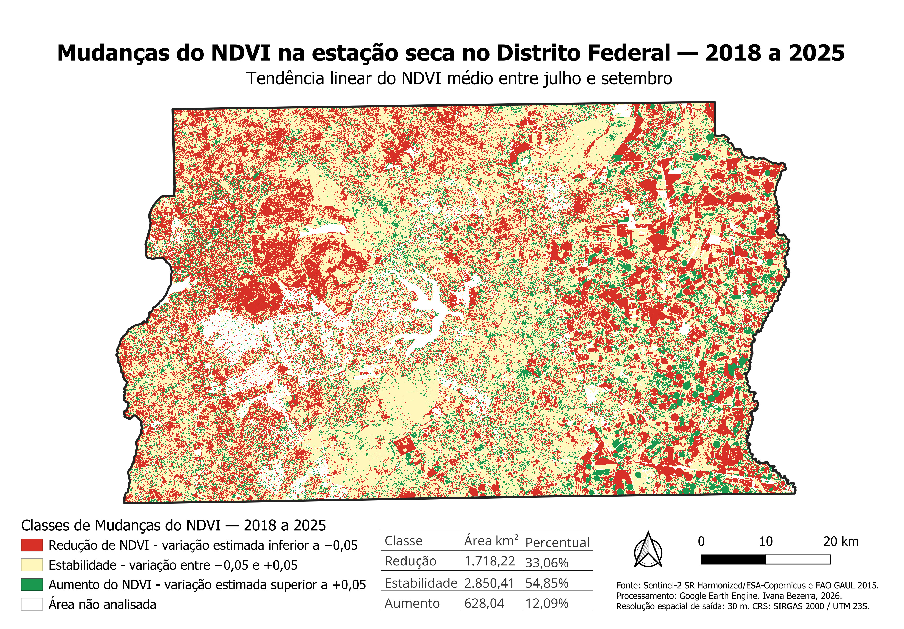

Sensoriamento remoto

Projeto geoespacial #01
Monitoramento multitemporal da vegetação no Distrito Federal
Análise da dinâmica do NDVI entre 2018 e 2025, com foco na estação seca e na identificação espacial de áreas de redução, estabilidade e aumento da vegetação.
Sentinel-2Google Earth EngineQGISNDVIJavaScript